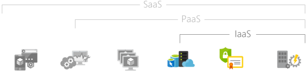
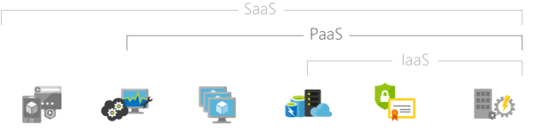
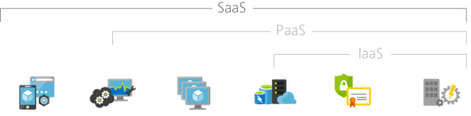
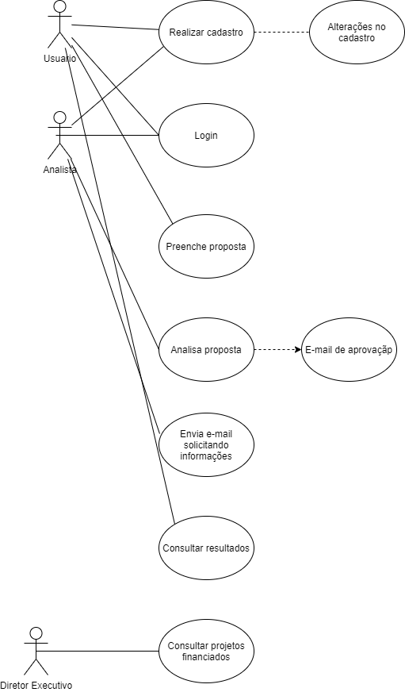

RA: 310582 Nome: Gabriel de Barros Braga
RA: 268364 Nome: Alex Germano
RA: 00000000 Nome: Wesley
RA: 00000000 Nome: Felipe
A FJW consultorias foi criada por alunos do terceiro semestre do curso de sistemas de informação para apresentar um Projeto Interdisciplinar (PI), existia a necessidade do desenvolvimento de uma aplicação para a Opportunity Brasil. A nossa empresa atua no mercado de TI (Tecnologia da informação), consultoria, desenvolve sistemas e efetua manutenções de forma geral.
Felipe Melo: gerenciou e coordenou o desenvolvimento de um e-commerce para uma multinacional e o desenvolvimento de sistema para a empresa IBM;
Weslley Neri: atuou na estratégia e organização de pessoas, no desenvolvimento do e-commerce e no desenvolvimento do sistema da empresa IBM;
Gabriel Braga: foi responsável por parte da infraestrutura (hardware e software), bem como desenvolveu a documentação necessária e realizou os testes finais dos projetos de e-commerce para a Opportunity e para a empresa IBM;
Alex Germano: foi o responsável pelo levantamento de requisitos e codificação dos projetos da metalúrgica Método e para a empresa IBM.
Oferecer aos nossos clientes de forma segura, com responsabilidade social e ambiental, a mais alta qualidade em serviços. Ser líder em qualidade, custo e satisfação do cliente. Trabalhar de forma integrada com nossos colaboradores para alcançarmos um único objetivo: a excelência no atendimento prestado.
Consolidar-se como a maior organização desenvolvedora de soluções tecnológicas com liderança no segmento para alcançar reconhecimento pela excelência em serviços. Satisfazer nossos clientes, atendendo suas necessidades com ética, transparência e competência.
E- Excelência, S- Segurança, T- Transparência, A- Atitude, C- Comprometimento, C- Competência
A organização foi fundada pelos alunos Felipe Sanches, João D Ângelo, Wesley Neri. A FJW Consultoria foi criada com o intuito de prestar consultorias no ramo da tecnologia. As cores da logomarca da empresa foram adotadas para passar uma maior seriedade, poder, segurança e conservadorismo. Nossa logomarca atrai um público alvo voltado a consultorias mais sérias que procuram consultores comprometidos em solucionar os problemas da empresa com muito respeito.
Colocation, Hosting e Cloud, cada opção é uma questão de adequação às necessidades do negócio.
Colocation – No entanto, não são todas as empresas que contam com espaço físico para evoluir as suas infraestruturas de acordo com as necessidades de seus negócios. Pensando nesses casos, empresas preferem contratar o serviço de Colocation. Para preservá-los com a vantagem de ampliar todo o espaço e a infraestrutura para que você possa escalonar sem a necessidade de altos investimentos. Importante frisar que além de poder manter o controle sobre os equipamentos. Colocation: Disponibiliza às empresas a infraestrutura física adequada para o armazenamento de seus equipamentos, servidores e aplicações com toda a segurança física, conectividade, climatização e suprimento ininterrupto de energia elétrica, estabilizada e redundante, transferindo seus equipamentos para o Colocation, a empresa ganha em confiabilidade, contando com a infraestrutura, reduz suas atividades administrativas e otimiza recursos humanos e investimentos antes utilizados na implementação, manutenção e qualificação desta infraestrutura física, como também ganha em produtividade e reduz custos, contando com maior espaço, tranquilidade e garantias para os seus ativos de TI. Isso significa mais segurança de dados, capacidade, controle e simplicidade, além da adequação de custos e poder de investimento em TI.
Hosting - É uma hospedagem, serve para denominar servidores que suportam as atividades de outros computadores da empresa. Há diversas denominações que determinam o modelo de contratação do hosting, ele se apresenta em duas categorias: hospedagem dedicada e hospedagem compartilhada como pode ser chamada. Na hospedagem dedicada, o servidor dedicado une infraestrutura com recursos exclusivos e alta performance, pois conta com alta disponibilidade e autonomia no gerenciamento do seu servidor, além de recursos exclusivos para desenvolver seus projetos, O servidor dedicado oferece diversas funcionalidades como linguagens de programação de acordo com o sistema operacional ao suporte com manutenção de rotinas de segurança, infraestrutura, rede e conexão com a internet. Na hospedagem compartilhada ela é caracterizada pelo seu volume definido do armazenamento em único servidor. Em alguns casos, há uma quantidade especifica de recursos para cada conta ou até mesmo SITE em outros casos, esse recurso é definido como “ilimitado”, o que significa que não há um limite estabelecido, mas há outros tipos de restrições. Lembrando frisar que se enquadra na mais popular e econômica entre outros tipos de hospedagem.
Cloud – A computação em nuvem usa um servidor remoto para conectar dispositivos dos usuários a recursos centralizados. Um servidor remoto armazena todos os dados e programas de que você precisa e pode estar no seu próprio país ou do outro lado do mundo. O fato é que você pode acessá-los on-line, de qualquer lugar, mesmo que estejam armazenados a quilômetros de distância, sendo que também tem o recurso que cloud computing traz inúmeras vantagens como a redução de custos com infraestrutura, economia do espaço, centralização da informação que é um ponto muito importante, trabalho remoto de funcionários da empresa que podem acessar todos os dados através de qualquer computador, notebook, ou até mesmo de um tablet. Desde que estejam conectados à internet.
A Computação em nuvem, o usuário deve assinar um serviço de cloud computing, seja ele gratuito ou pago, mas que o fornecedor ofereça a infraestrutura para armazenamento e processamento dos softwares. O Usuário irá ter acesso a softwares e ambientes de armazenamento por meio de uma página web, dispensando a responsabilidade de o usuário possa ter infraestrutura própria de armazenamento e arque com o pagamento de manutenção e licenças de software. Em resumo, a responsabilidade de infraestrutura e programas fica a cargo do fornecedor. Há três tipos de serviços de nuvem, são eles: IaaS, PaaS, SaaS..
IaaS - Computação em nuvem, infraestrutura como serviço, também conhecido como Infrastructure as a service. Nesse modelo, o IaaS é a parte encarregada por prover toda a infraestrutura necessária para a PaaS e o SaaS, e o seu principal foco é tornar mais fácil e acessível o fornecimento de recursos, tais como servidores, rede, armazenamento, e entre outros. Recursos de computação essenciais para construir um ambiente sob demanda, que podem incorporar sistemas operacionais e aplicativos

PaaS - Platform as a service (Plataforma como serviços) é um modelo que oferece um ambiente cloud feito especificamente por desenvolvimento e execução de aplicação, além de armazenamento e outros recursos de computação existe um conjunto de ferramenta para desenvolver, customizar, testar e disponibilizar aplicações permitindo que as empresas se concentram apenas no desenvolvimento sem preocupação de infraestrutura. Diversas empresas disponibilizam PaaS como Microsoft, Google, Ibm, Amazon, e entre outras
SaaS - Software as a service (software como serviço) É um modelo de tecnologia por meio de internet como um serviço como esse modelo o usuário realiza o pagamento de acordo com o volume de utilização ou das funções adquiridas, podemos citar alguns exemplos desde de sistemas completo de gestão empresarial até CRMs, e citando os mais comuns como Google driver, Netflix, Spotify, e entre outras.
O sistema permitirá que usuários sejam cadastrados. O sistema permitirá que os usuários façam alterações em seus cadastros. O cadastro deverá conter: nome, login, senha, endereço, e-mail, CEP, bairro, cidade e estado, nome da empresa, CNPJ, diretoria executiva da empresa, missão e valores.
O sistema permitirá o acesso dos usuários através do login e senha. .
O usuário irá preencher um campo com sua solicitação de proposta.
O sistema só aceitará as aplicações que estiverem corretamente preenchidas.
Toda proposta será analisada por uma analista que irá analisar os dados inseridos pelas empresas, sendo aprovado ou reprovado.
O sistema enviara um e-mail para os cadastros aprovados solicitando as seguintes informações da empresa, Empresa que esta solicitando parceria, descrição do projeto para parceria, custo do projeto e informações adicionais necessárias.
A analista de investimos irá avaliar todas as solicitações de parcerias enviando um e-mail aceitando ou recusando a parceria e um parecer sobre a parceria.
O sistema terá uma área para os clientes consultarem os resultados de suas solicitações de parceria.
O sistema terá uma área exclusiva para pessoas cadastradas como Diretor Executivo, podendo acompanhar os projetos que estão sendo financiados pela Opportunity.
O usuário fará um cadastro no sistema.
O usuário poderá fazer alterações no cadastro.
O usuário realiza login utilizando login e senha.
O usuário preenche sua solicitação de proposta.
A analista irá analisar as propostas.
O sistema enviara um e-mail para os aprovados.
A analista irá enviar um e-mail solicitando informações.
Os clientes poderão consultar os resultados das propostas.
O Diretor Executivo terá acesso aos projetos financiados pela Opportunity.

Realizamos a atividade.